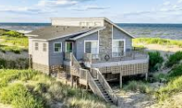
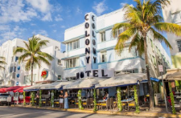
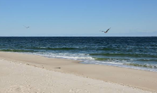
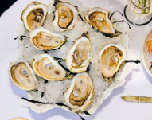
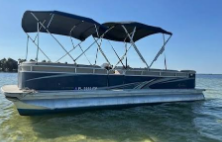
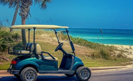
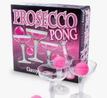
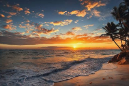

Why Isle of Palms
The IOP is a hot spot for many years for bachelorette parties to stay while visiting the greater area. Isle of Palms is a quiet, residential beach island, so the party centers on the rental: pool, porch and sand. Plan one or two big nights in Charleston and keep the rest relaxed. Sullivan's Island is next door for casual food and bars, and Shem Creek in Mount Pleasant is close for boat days.

Where to Stay
Private beach houses
Best for groups. Look on VRBO or Airbnb for 7–10 bedroom homes with a private pool, hot tub and beach access. Heated pools usually cost extra, which matters October–April. Homes like Belle Mer are built for big groups. Sorry hotels, you just can't really match what rental homes have to offer for these types of trips.
Resorts and hotels
- Wild Dunes ResortNorth end of the island. Pools, spa, golf, beach service and resort-managed homes.
- Seaside InnOceanfront near Front Beach, with bikes and beach chairs.
- The Palms Oceanfront HotelOn the sand and walkable to the Front Beach bars.


Getting There & Getting Around
- Fly: Charleston International (CHS) is 25–30 minutes from the island by Uber or shuttle.
- Drive: Downtown Charleston is about 20-30 minutes per traffic. A few cars on site make grocery runs easy.
- On the island: golf carts and bikes are the easiest way to reach Front Beach and Sullivan's.
- To downtown: rideshares can cost $30–$100 each way at peak times and late pickups are slow. Pre-book rides home or hire a driver for the night.
- Parking downtown: Is not cheap and hard to find spots to park at times. Be sure to leave early and plan for this expense.
Stocking the Rental
Make one big stop on arrival. The Costco at Ashley Town Center carries beer, wine and liquor along with breakfast, charcuterie and mixers. For smaller items, Publix at North Point in Mount Pleasant is about 15 minutes away.
Where to Eat
- The Boathouse at Breach InletSeafood and water views at the Sullivan's Island bridge.
- Acme Lowcountry KitchenSouthern brunch; order the shrimp and grits.
- The Obstinate DaughterSullivan's. Pizza, pasta and seafood for a group dinner.
- Home Team BBQSullivan's. Casual late lunch; big groups should expect a wait.
- The Co-Op Frosé & EateryFrosé flights and sandwiches on Sullivan's and Isle of Palms.
Island Bars
- The WindjammerFront Beach bar with live music on the sand.
- Coconut Joe's Beach GrillRooftop drinks over the ocean.
- The DinghyLaid-back spot for a low-key night.
Charleston Night Out
Reserve dinner 4–6 weeks ahead. Many downtown restaurants require a deposit or set menu for large parties.
- Leon's Oyster ShopFried chicken and oysters, with family-style options for groups.
- The Darling Oyster BarKing Street raw bar before barhopping.
- Vintage LoungeUpper King wine bar with bubbles and charcuterie.
- The Cocktail ClubCraft cocktails and a rooftop.
- Uptown SocialBusy Upper King rooftop.


Bring the Show After Dinner
Most Isle of Palms nights happen at the rental, so make one of them the main event. Add a private performance from Michael At Your Place to the pajama party or lingerie shower. He travels to rentals across the Charleston area, so there are no rides or lines and the focus stays on the bride. It's $200 for up to 90 minutes, paid when he arrives, and he takes last-minute dates.
Isle of Palms Bachelorette Activities
- Beach day: rent chairs and umbrellas or walk straight out from the rental.
- Party boat: Captain Cocktail Cruises runs BYOB pontoons from Shem Creek with swim stops and floats.
- Harbor cruise: the Daniel Island Ferry does private charters and sunset trips.
- Paddle: Coastal Expeditions rents kayaks and boards and runs dolphin tours.
- Golf carts and bikes: cruise Front Beach and Sullivan's.
- Golf or spa: both are at Wild Dunes Resort.


Bachelorette Party Ideas for the Rental
- Name cups with letter stickers so drinks don't get mixed up.
- Hangover kits: pain reliever, makeup wipes, electrolytes and snacks.
- Prosecco pong with coupes.
- Matching cover-ups, with white for the bride.
- Balloon name banner and an instant camera for a photo wall.
- Pajama party and lingerie shower where guests guess who gave each gift.

Sample Thursday–Sunday Itinerary
- ThursdayEarly crew stocks the fridge and decorates. Others arrive through the evening; snacks and cocktails at the house.
- FridayPool and beach with a sandwich-bar lunch. Early dinner at Leon's, then Upper King.
- SaturdaySlow morning. Frosé at The Co-Op, lunch at Home Team BBQ or an afternoon boat. Pizza and pajama party at night.
- SundayCoffee, cleanup and checkout.

Planning Tips
- Best months: April–June and September–October. Winter is cheaper but windy.
- Book early: large homes book 6–12 months out for spring.
- Know the rules: the island restricts alcohol, glass and noise on the beach. Keep the party at the house.
- Plan rides home: schedule downtown pickups before you leave the island.